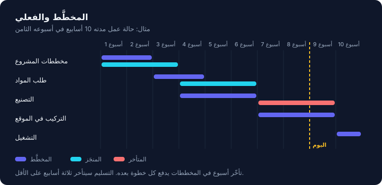
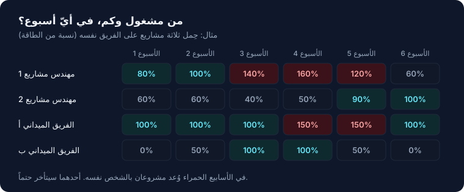

متى يصبح برنامج إدارة المشاريع ضرورياً؟
في الشركات التي تعمل في الهندسة والمقاولات والتركيب تُعَدّ خطة المشروع غالباً مرة واحدة في بداية العمل. يخرج جدول زمني جميل في Excel، يُعرض في الاجتماع، ثم يدخل مجلداً ولا يُفتح ثانية. والعمل يمشي مع ذلك، لأن مدير المشروع يحفظ كل شيء في ذهنه. وحين تسير ثلاثة أو أربعة أعمال في الوقت نفسه ترهق هذه الطريقة الشخص والشركة معاً.

لماذا تبقى الخطة على الرف؟
إبقاء الجدول الزمني في Excel محدَّثاً عمل قائم بذاته. يصل خبر من الميدان، فيفتح أحدهم الملف، يزيح التواريخ، ويرسل النسخة الجديدة بالبريد إلى الجميع. بعد أسبوعين تكون أربع نسخ مختلفة متداولة ولا أحد يعرف أيّها الصحيح. وبعد مدة يتوقف حتى من كان يحدّث الجدول.
بعد ذلك تُعرف حالة المشروع بالهاتف. يُسأل الميدان «أين وصلنا» فيأتي الجواب «ننتهي غداً». وقد يأتي الجواب نفسه ثلاثة أسابيع، لأن نسبة ما أُنجز من العمل غير مكتوبة في أي مكان.
ولذلك مقابل عند العميل أيضاً. حين يحين إعداد المستخلص (كشف الأعمال المنجزة للمطالبة بالدفعة) يُحاوَل جمع من نفّذ كم من العمل، وأيّ مواد نزلت إلى الموقع، وأيّ عمل إضافي وافق عليه العميل، من المستندات. وكل مستند ناقص يعني تأخّر الفاتورة شهراً.
كيف يكبر التأخير الصغير؟
الأعمال في المشروع مرتبط بعضها ببعض. إذا تأخّرت الموافقة على المخططات تأخّر طلب المواد، وإذا وصلت المواد متأخرة انزاح التصنيع، وإذا انزاح التصنيع انتظر الفريق الميداني بلا عمل أو أُرسل إلى عمل آخر. انزياح أسبوع في البداية يظهر لكم ثلاثة أو أربعة أسابيع عند التسليم.

هذه السلسلة نفسها لا مفرّ منها، ففي كل مشروع ينزاح شيء ما. المشكلة أن يُنتبه للانزياح متأخراً. إذا لم تكن الخطة محدَّثة عرفتم بالتأخير قبل موعد التسليم بأسبوعين، وعندها لا يبقى أمامكم إلا تشغيل ساعات إضافية وطلب مهلة من العميل.
الفريق نفسه وثلاثة مشاريع
في الشركة المتوسطة، كلما زاد عدد المشاريع كان الضغط الحقيقي على الأشخاص. المهندس نفسه يرسم لثلاثة مشاريع، والفريق الميداني نفسه وُعد به موقعان. كل مشروع يبدو معقولاً بمفرده، وحين تضعونها جنباً إلى جنب يتبيّن أن شخصاً واحداً يُنتظر منه في بعض الأسابيع عمل شخصين.

يمكن إمساك هذا الجدول في Excel، لكن يجب إعادة حسابه يدوياً عند كل تغيير في المشاريع. ولا أحد يفعل ذلك. فيُكتشف التعارض يوم لا يستطيع الفريق الذهاب إلى الموقع.
ماذا يفعل برنامج إدارة المشاريع؟
في الأساس يُبقي الخطة حيّة. تُدخَل الأعمال ومددها وارتباط بعضها ببعض مرة واحدة. وحين يتأخّر عمل تنزاح تواريخ الأعمال المرتبطة به تلقائياً ويظهر موعد التسليم الجديد فوراً.
التقدّم يُدخَل من الميدان. رئيس الفريق يؤشّر من هاتفه على ما أُنجز ذلك اليوم، يضيف صورة، ويدوّن المواد الناقصة. ومن في المكتب لا يتصل بأحد ليعرف الوضع.
المستندات تُجمع تحت المشروع: العقد، آخر نسخة من المخططات، المراسلات مع العميل، الأعمال الإضافية الموافَق عليها، محاضر التسليم. وحين يحين وقت المستخلص يكون مكان البحث معروفاً.
وأخيراً تقف كل المشاريع جنباً إلى جنب على شاشة واحدة. أيّها في موعده، وأيّها يتأخّر، ومَن عليه حِمل زائد في أيّ أسبوع، ترون ذلك بنظرة. ومع هذه الشاشة لا يُصرف وقت الاجتماع الأسبوعي في السؤال عن الوضع، بل يُبحث مباشرة ما الذي سيُفعل.
عند أيّ حجم يصبح لازماً؟
لفريق من خمسة أشخاص عنده مشروع واحد يكفي ملف Excel مُمسَك جيداً. وبحسب ما رأينا يبدأ بعدم الكفاية في هذه الحالات:
- إذا كان أكثر من ثلاثة مشاريع يسير في الوقت نفسه.
- إذا كان الأشخاص أنفسهم أو الفرق نفسها يعملون في أكثر من مشروع.
- إذا كان الاتصال الهاتفي الطريقة الوحيدة لمعرفة الوضع في الميدان.
- إذا كانت المستخلصات تتأخّر لأن المستندات لا تُجمع.
- إذا كنتم لا تعرفون كم مشروعاً سُلِّم متأخراً السنة الماضية.
ما يُنتبه له عند البدء
أكثر الأخطاء شيوعاً محاولة إدخال كل تفصيل إلى النظام من اليوم الأول. لا أحد يستطيع إبقاء قائمة أعمال من ثلاثمئة سطر محدَّثة. ابدؤوا بخمسة عشر إلى عشرين عملاً رئيسياً لكل مشروع، وزيدوا التفصيل كلما احتجتم.
ثانياً، يجب أن يكون إدخال البيانات من الميدان سهلاً جداً. لا تستطيعون أن تنتظروا من رئيس الفريق أن يجلس إلى الحاسوب كل مساء. المعلومة التي لا تُدخَل بلمستين على الهاتف لا تُدخَل أبداً بعد مدة.
ثالثاً، ابدؤوا بمشروع جديد. نقل عمل نصفه منجز إلى النظام متعب وينفّر الفريق من البداية. افتحوا العمل التالي في النظام ودعوا القديمة تنتهي بترتيبها.
أيّ أداة ستُستخدم قرار يأتي بعد ذلك. هناك أدوات جاهزة لإدارة المشاريع، ووحدات المشاريع في أنظمة ERP، وحلول تُكتب خصيصاً للشركة. نحن ننظر أولاً كيف تدير الشركة مشاريعها ثم نقترح الأداة بحسب ذلك.
أسئلة شائعة
عندنا جدول زمني في Excel، فلماذا لا يكفي؟
Excel يكفي لرسم الخطة. ما يصعب عليه هو إبقاء الخطة محدَّثة ورؤية أكثر من مشروع في الوقت نفسه. ما دام الملف على حاسوب شخص واحد فالمعلومة القادمة من الميدان لا تصل إليه.
هل يُدخل الفريق الميداني البيانات من الهاتف؟
يُدخلها إذا كانت المعلومات المطلوبة قليلة والشاشة بسيطة. وفي تجربتنا، التقاط صورة ورفعها أسهل خطوة يتقبّلها الفريق، لأنه أصلاً يصوّر ويرسل إلى WhatsApp.
أداة جاهزة أم برنامج خاص بالشركة؟
إذا كان عملكم قريباً من مسار قياسي فالأداة الجاهزة أسرع وأرخص. وإذا لزم الربط مع المستخلصات وعروض الأسعار والمخزون، أو كانت طريقة عملكم خاصة بكم، فالنظام المكيَّف أطول عمراً.
خدماتنا ذات الصلة: نظام ERP لشركات الهندسة والمقاولات، حلول ERP للشركات الصغيرة والمتوسطة.